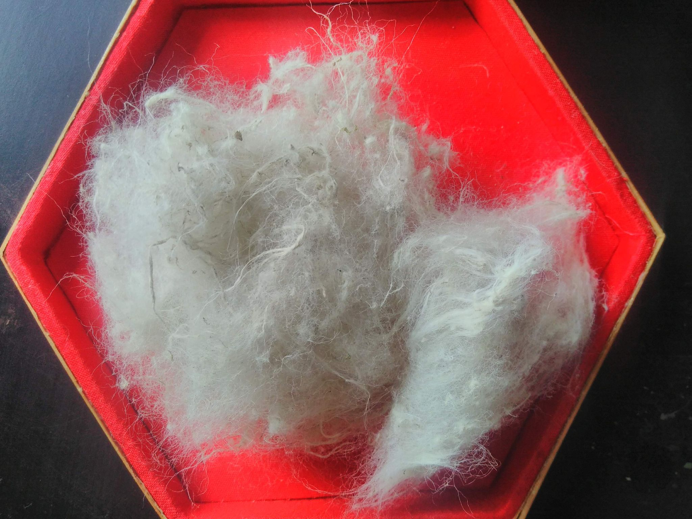

Ortissage : textile nettle for ecological transition
Welcome to the Ortissage website!
This is the place where we share with you all the knowledge related to textile nettle.
Because yes, we can make a textile fibre similar to cotton, with the nettles from our
gardens! !
But does nettle fibre sting? No, it doesn't sting, in fact it's surprisingly soft !
In order not to get the wrong plant, we will use the Latin name of the common nettle: Urtica
Dioica
Why do you want to make wild nettle fibre?
For several reasons :
- To have a local alternative to cotton fibre and synthetic filaments, which often cause
environmental problems.
- To know how to make a 100% plant-based and local fibre, which uses little water, little
energy and no chemicals! You don't even need farmland to make a local product as
nettle grows spontaneously in many gardens.
- To make spinning, weaving, belts, bags, crafts from local nettle fibre..
To create composite materials based on nettle: waterproof materials similar to leather,, bioplastics 100% biodegradable, replace glass or carbon fibre, etc.
All these alternatives can be created from nettle fibre, which is
as versatile as flax or
textile hemp ! The ecological transition will inevitably involve thinking about biomaterials
for a large number of textiles and everyday objects.

Fibre d’ortie
What does the Ortissage website offer ?
What is proposed here is to learn how to make your own nettle fibre, even if you know
nothing about textile fibres. There is therefore a learning goal in the Ortissage project,
to make the link between common plants and an ecological and contemporary
production of textile fibres, and to understand the process step by step.
The « KNOWLEDGE » tab allows you to learn about the processes used to produce
nettle fibre, while respecting ecological criteria. All the know-how on the site is free and
in the public domain.
The "PUBLIC DOMAIN" tab allows you to become familiar with the notion of public
domain know-how, Creative Commons and free access to knowledge for the ecological
transition.
The "WORKSHOPS" tab provides information on upcoming workshops and events. The
proposed workshops are not free of charge, they allow you to learn on the field all the
technical details of the processes used, and give you the possibility to be an independent
producer of nettle fibre.
The "SHOP" tab is currently under construction. We are doing our best to offer you
quality nettle fibre at a reasonable price soon!
The "LINKS" tab provides links to various groups, companies and associations that are
doing research on nettle fibre.
The "CONTACT" tab allows you to send an e-mail to Ortissage.
Enjoy your visit, and good discovery!
:)